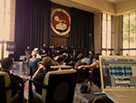

Mantz Music News
Summer 2013 Mixing Contests
July 1, 2013 - Sounds of Cypress Orchestra
Tracked a few selections for consideration for the orchestra's website and other advertising media
May 19, 2013 - King Karl King Honor Band
Congratulations to all the 7th, 8th, and 9th graders who performed with the Tribute to King Karl King Honor Band at RCC. This group played with a mature sound and good balance. Also, the RCC Wind Ensemble completed a moving performance of Copland's Lincoln Portrait narrated by Dr. Wolde Ab Isaac
May 11, 2013 - RCC Jazz Festival
 A full day of performances at the RCC Jazz Festival. Starting at 8:00 am (jazz musicians aren't supposed to be up that early), all the way through 6:30 pm. 19 of the 84 bands participating in the festival went through the Bradshaw Center where I was stationed. After completing my recording duties, I caught the last few songs at Landis Auditorium with the RCC Night Band featuring guest artist Bob McChesney. It's not everyday you get to see a trombonist soloing over "Cherokee!" Congratulations to all of the bands that performed for a day filled with music.
March 24, 2013 - Webb Schools Chamber Music Concert
Webb Schools' Music Department performed to a packed house on March 24, 2013. The program included a wide variety of ensembles from instrumental chamber ensembles, solos, and a choir singing from the second floor perimeter of the hall.
February 28, 2013 - Moreno Valley Wind Symphony "Spooks and Legends" Concert
© Anthony Mantz 2013 909-261-0416